Program Pengamatan Exoplanet Observatorium Bosscha
Ek \(\cdot\) so \(\cdot\) pla \(\cdot\) net
n Astron: planet di luar tata surya
Planet ada di mana-mana
Trappist-1
How people think we saw exoplanets
How we really saw them
Fotometri Transit Exoplanet
Kurva Cahaya Transit

- Bintang/planet
- Radius
- Periode
- Inklinasi
Fotometri Bukaan
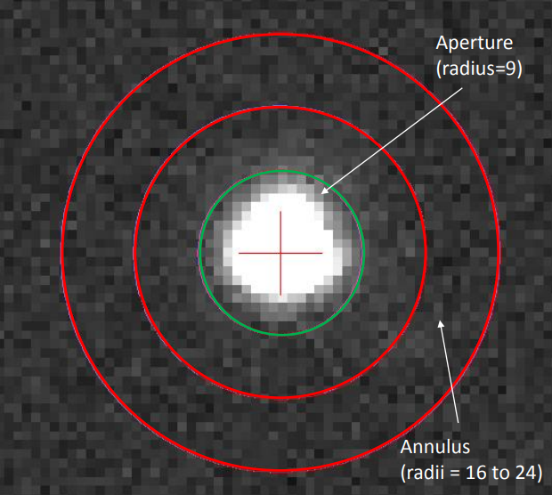
Fotometri Diferensial

Mengukur perbedaan fluks bintang
Bintang variabel: Presisi 0.05 - 0.01 mag
Eksoplanet: Presisi 2 - 5 mmag
Menghitung Foton
… dengan akurat dan PRESISI …
… memaksimalkan SINYAL dan meminimalkan NOISE …
Perjalanan Foton


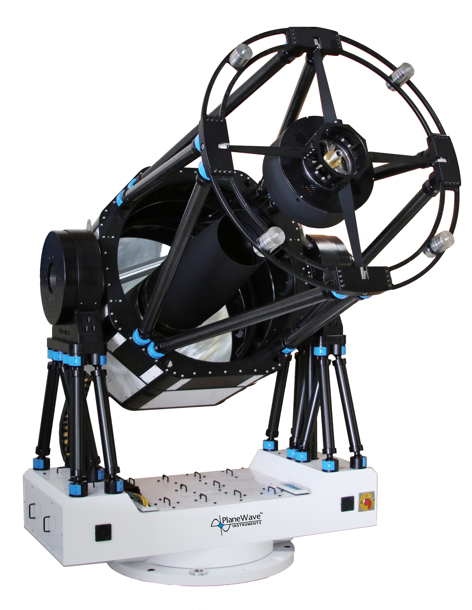


Citra Medan Datar

Citra Medan Datar
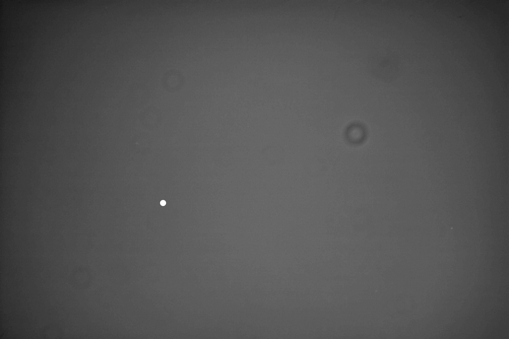
Citra Medan Datar

Meminimalkan pergerakan bintang
Sedapat mungkin bintang jatuh pada piksel yang sama selama pengamatan eksoplanet (4-6 jam)
- Pergerakan bintang (pada CCD) adalah fungsi dari:
- Kesalahan Polar Alignment
- Waktu integrasi
- Panjang fokus
- Deklinasi target
- Jarak antara bintang target dan bintang pemandu
- Meminimalkan kesalahan periodik mounting
- Mounting yang seimbang
- Autoguiding
Autoguiding
Teleskop pemandu terpisah
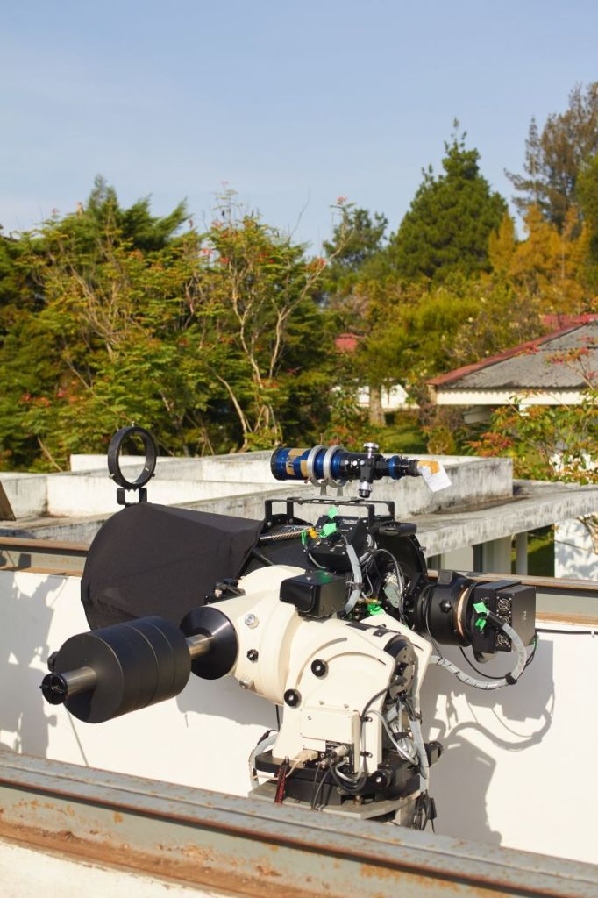
Pemandu off-axis
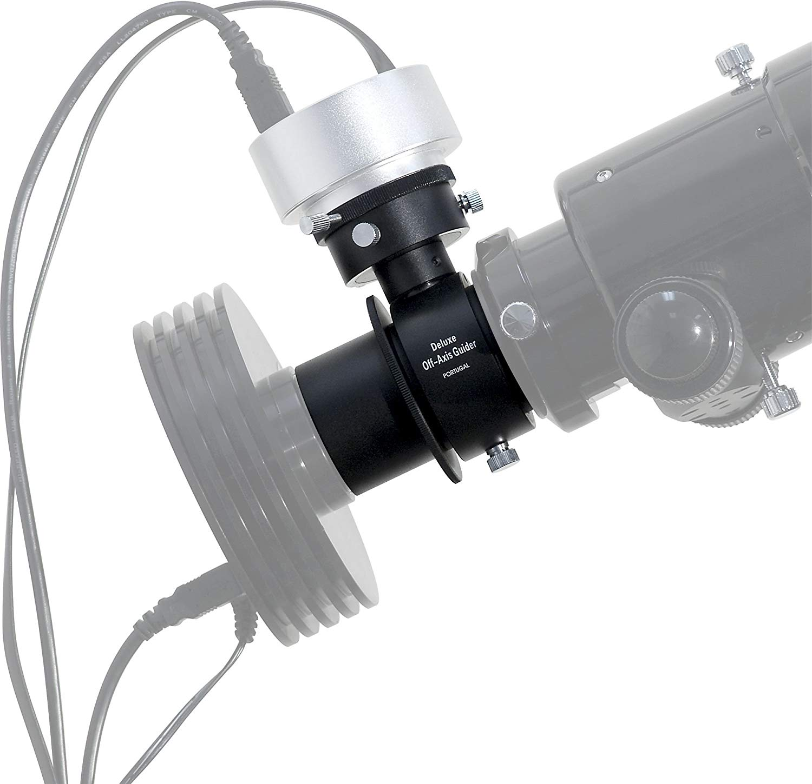
Pemandu on-axis
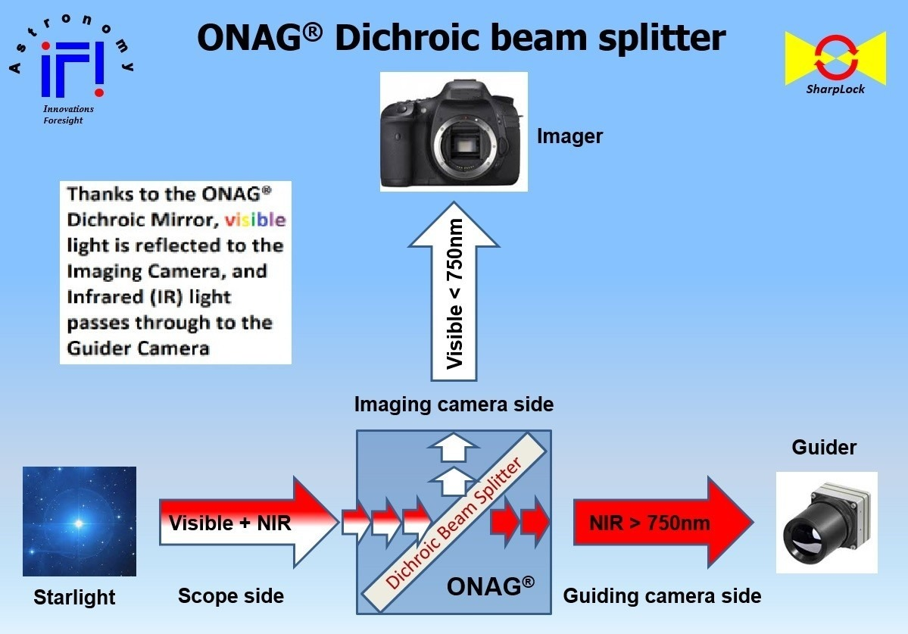
Pemandu dengan menggunakan kamera utama
Waktu koreksi \(\geq\) waktu eksposur kamera utama
Rotasi medan

Perbedaan kelenturan

Rekam Jejak Pengamatan Eksoplanet di Observatorium Bosscha
2006

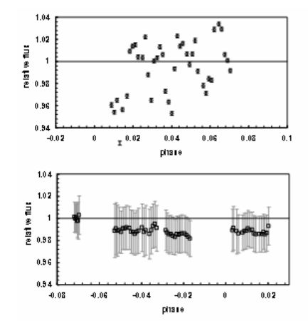
2014


2016


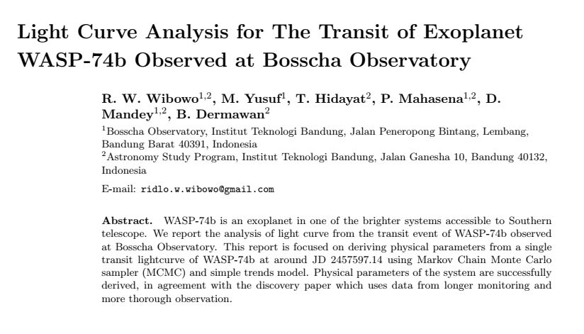


2018


Belum dipublikasikan (2015-2018)

Instrumen Pengamatan
Bosscha Robotic Telescope
(BRT)
Planewave CDK14
Spesifikasi teknis
| Desain Optik | Corrected Dall Kirkham |
| Diameter | 356mm (14inchi) |
| Panjang fokus | 2563mm |
| Focal Ratio | f/7.2 |
| Medan pandang optimum | Lingkaran dengan diameter 70mm |
| Desain badan | Carbon fiber truss |
| Central Obstruction | 23.5% surface area |
| 48.5% diameter |
Perlengkapan tambahan
Kipas Pendingin 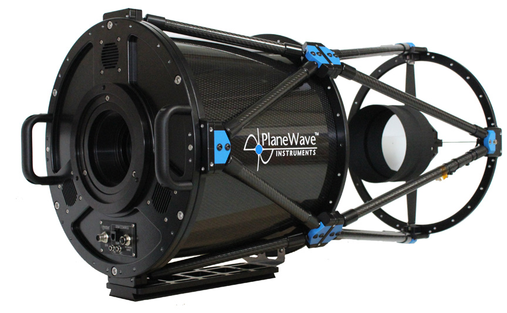
Sistem Pemanas 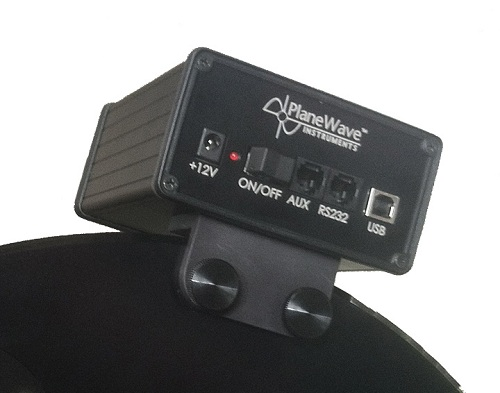
Hedrick focuser
Teleskop dilengkapi dengan focuser motorik yang mampu menahan beban hingga 10kg. Focuser dapat bergerak sejauh 3,25 cm dengan ketelitian 1 mikron.


Kamera FLI Proline 11002
| Sensor | Kodak KAI-11002 |
| Jumlah piksel | 4008(H) \(\times\) 2672(V) |
| Ukuran piksel | 9 mikron |
| Pendingin | 65 \(^o\) C di bawah ambien |
| Medan pandang | 48.20’ \(\times\) 32.26’ |
| Resolusi | 0.72“/piksel |
| Shutter | Elektronik |

Filter 2“ Custom Scientific BVRI

Mounting Astro-Physics 1600 GTO
| Kapasistas beban | 100kg |
| Resolusi motor encoder | 0.05“/tik |
| Kecepatan gerak maksimum | 5 \(^o\) /detik |
| Periodic error | \(\pm\) 2.5“ dalam 6.4 menit |
- Kedua arah gerak dapat diatur kecepatannya secara bebas
- Kondisi meridian flip dapat diatur
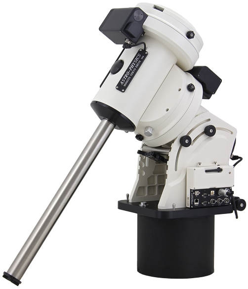
Sistem Robotik
Perangkat Lunak
- Skrip Python2.7 (2013) - ACP (2015) - skrip Python3.7 (2017)
- Memanfaatkan ASCOM, COM model, dan objek JSON dari MaximDL, TheSky6/X, PinPoint/Astrometry.net, PWI Focuser/Focusmax, dan OpenPHDGuiding
- Bersifat modular
- Modul kamera
- Modul mounting
- Modul guider
- Modul focuser
- Modul platesolve
- Modul logger
- Modul parser
- Modul utama
Modul Guider
Melakukan close-loop guiding dengan menggunakan kamera utama. Diadaptasi dari NGTS dan SPECULOOS (McCormac, 2013)

Modul Focuser
Autofocusing melalui V-Curve Half-Flux Diameter bintang


Modul Platesolve
- Astrometri/pengenalan pola bintang terdeteksi terhadap katalog bintang
- PinPoint/TheSkyX/astrometry.net
- Katalog bintang menggunakan GSC1.1 dan USNO-B
Kriteria Eksoplanet
- Transit berada dalam rentang senja dan fajar astronomi
- Ketinggian minimum: 30 derajat
- Jarak sudut bulan: 50 derajat
- \(V \lt 13\)
- \(dv \gt 10\) mmag
- Durasi transit \(\lt 3\) jam
Pengamatan
- Citra kalibrator saat senja dan/atau fajar
- Focusing
- Kalibrasi waktu
- Mulai 1 jam sebelum peristiwa transit dan berakhir 1 jam setelah peristiwa transit
- Menjaga bintang tetap jatuh pada piksel yang sama
- Waktu eksposur dan binning sesuai kecerlangan bintang dan resolusi waktu
- Mode fokus untuk bintang > 8 mag
- Citra defokus dengan FWHM: 10-20 piksel
Olah dan analisis data
- Citra mentah
- Citra bersih
- Konversi waktu BJD dan platesolve
Kurva cahaya dari fotometri diferensial
- Bintang pembanding dengan kecerlangan sama
- Bintang pembanding dengan warna sama
- Bukaan sesuai profil seeing

- Deterending
Parameter fisis eksoplanet
LEMON - EXONAILER (The EXOplanet traNsits and rAdIal veLocity fittER)
AIJ (ImageJ for Astronomy)


| Parameter | Obs | Ref (Hebrard, 2012) |
|---|---|---|
| Periode (hari) | 1.74977* | 1.74977 |
| Eksentrisitas | 0 | 0 |
| Radius Bintang \(R_\odot\) | 0.79* | 0.79 |
| Limb Darkening u1 | 0.527 | - |
| Limb Darkening u2 | 0.179 | - |
| Durasi transit (hari) | 0.0797 | 0.0754 |
| Rasio planet bintang | 0.0275 | 0.0271 |
| Impact parameter | 0.5882 | 0.6 |
| Inklinasi | 85.235 | 85.35 |
| Radius planet | 1.275 | 1.27 |
Peluang Riset Eksoplanet
- Konfirmasi eksoplanet baru - proyek KELT
- Memperbarui dan mempertajam parameter planet yang telah diketahui
- Mengamati dan mencari Transit Timing Variation - proyek ETD
- Tindak lanjut pengamatan landas bumi kandidat TESS
Roadmap

TESS

- Survei seluruh area langit untuk bintang-bintang terang dalam jarak 200 parsek
- Mencari dan mengukur massa 50 planet dengan radius < 4 kali radius Bumi
- “Finder” untuk JWST
Spesifikasi
| Medan pandang tunggal | \(24^o \times 24^o\) |
| Medan pandang total | \(24^o \times 96^o\) |
| Diameter | 10,5 cm |
| Focal ratio | f/1,4 |
| Rentang panjang gelombang | 600 - 1000 nm |
Medan Pandang BRT

Ukuran Piksel BRT

Ukuran Piksel TESS

Ukuran Piksel TESS

Ukuran bukaan fotometri TESS
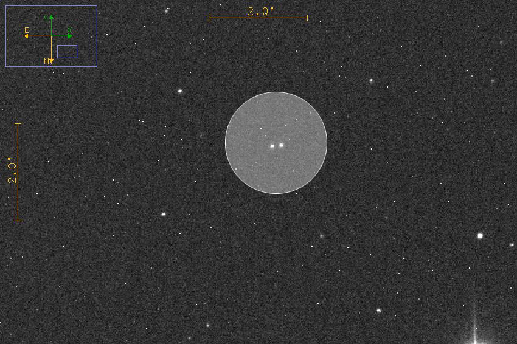
Tantangan TESS
- Cahaya beberapa bintang sangat mungkin menyatu pada citra TESS
- Penurunan intensitas cahaya bisa jadi ’eksoplanet’ atau penyebab lainnya (false positive)
- Perlu pengamatan tindak lanjut landas bumi
TESS Follow-up Working Group
- Seeing-limited Photometry to identify false positives due to variable stars such as eclipsing binaries that contaminate the TESS image of a candidate transiting planet.
- Recon Spectroscopy to identify astrophysical false positives and to contribute to improved stellar parameters for the host star in those cases where the uncertainty in the planetary mass and radius is limited by the uncertainties in the mass and radius of the host star.
- High-resolution Imaging with adaptive optics, speckle imaging, and/or lucky imaging to detect nearby objects that are not resolved in the TESS Input Catalog or by Seeing-limited Photometry.
- Precise Radial Velocity Work with the goal of deriving orbits for the planet(s) orbiting the host star for the determination of planetary mass(es) relative to the host star.
- Space-based Photometry with facilities such as HST, Spitzer, MOST, CHEOPS, and JWST, primarily to confirm and/or improve the photometric ephemerides provided by TESS, but also to provide improved light curves for transit events or even transit time variations in some cases.
Peluang publikasi
- TFOP WG members who contribute results that are useful to promote a candidate to the next level of follow-up should also be invited to join as an author if the candidate is ultimately published. An example is time-series photometry of a target that does not detect a shallow transit in the target, but does show that no detectable events occur in nearby stars that contaminate the TESS aperture.
- If a member submits 25 consecutive null results before his/her contributions have been recognized by authorship on a paper, then the member will be extended the option of authorship on a compensatory TFOP WG member-led paper, even if none of the member’s results contributed directly to that paper.
Preferred Applicant Capabilities SG1
- Applicants should ideally have access to a facility with the capability to maintain the position of the field on the detector to within a few pixels throughout a sequence of time-series observations.
- On-axis guiding is preferred over off-axis guiding, but both are preferred over no telescope guiding.
- Also, pixel scales of 1 arcsec or less are preferred.
- Applicants should also be capable of calibrating their own image sets, performing differential photometry, and submitting light curve plots, finder field images, and photometric data to ExoFOP-TESS.
Identifikasi false-positive


- Bentuk kurva cahaya
- Kedalaman kurva cahaya yang silih berganti
- Variasi kedalaman pada filter yang berbeda
- Besar kedalaman
TESS Object of Interest
- TESS Candidate Target List v6: 3.805.509
- TESS Object of Interest: 408
- Peluang pengamatan di Observatorium Bosscha:
- Tahun 2019: 348 Pengamatan, 2 obyek per malam
Peluang Kolaborasi

Kendala dan tantangan
- Cuaca
- Cuaca
- Cuaca
- Tenaga peneliti
- Perlu instrumen yang lebih baik
- Fotometri multi filter
- Kombinasi pengamatan fotometri dan spektroskopi
Ikhtisar
- Pengamatan eksoplanet di Observatorium Bosscha memberikan hasil yang cukup menjanjikan
- Pengembangan instrumen, pengamatan, sistem, olah data, dan analisis masih dapat dikembangkan lebih jauh
- Ajakan ke seluruh pihak untuk bergabung dalam program pengamatan eksoplanet
- Peluang kolaborasi untuk tindak lanjut TESS